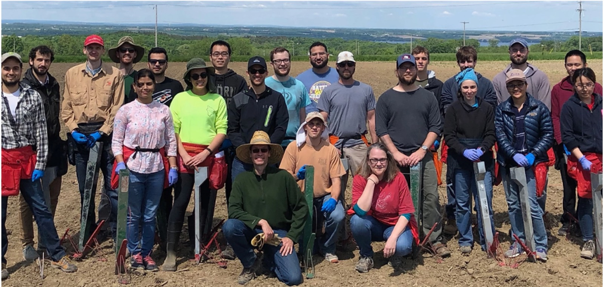
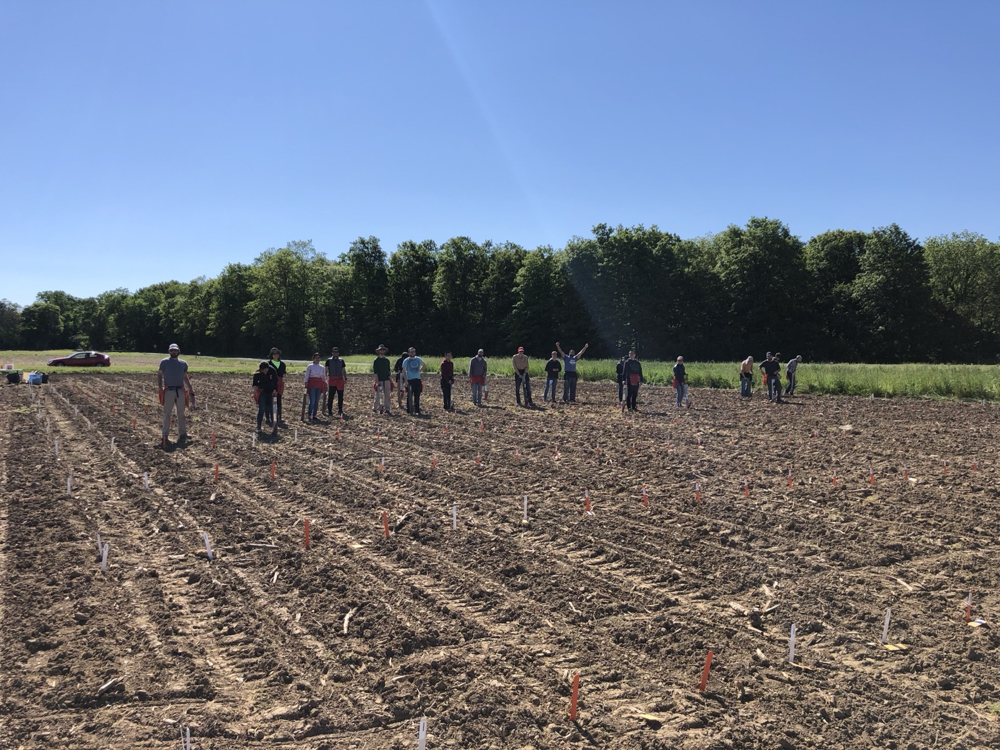
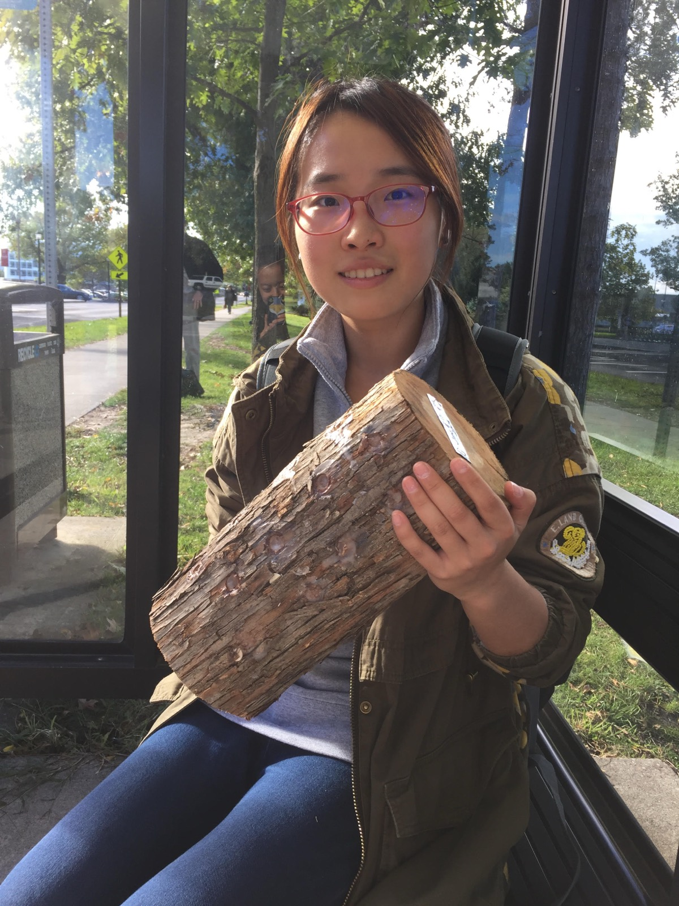
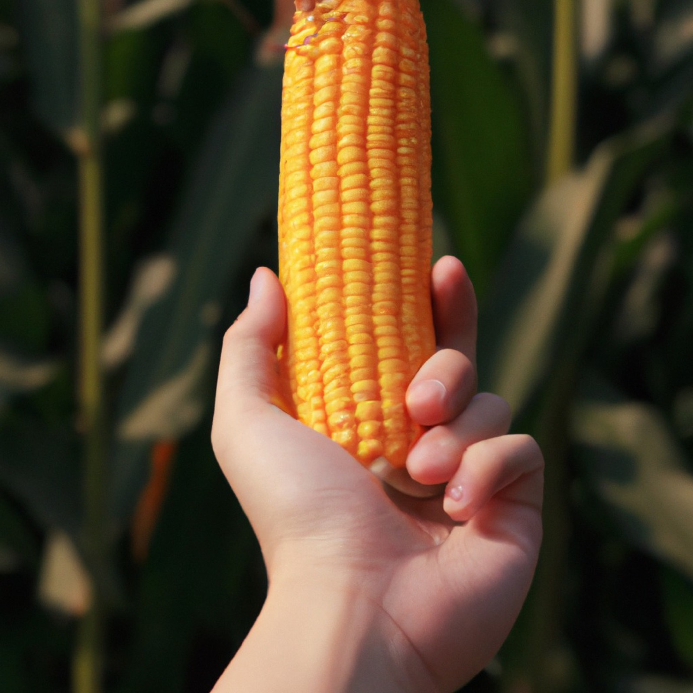
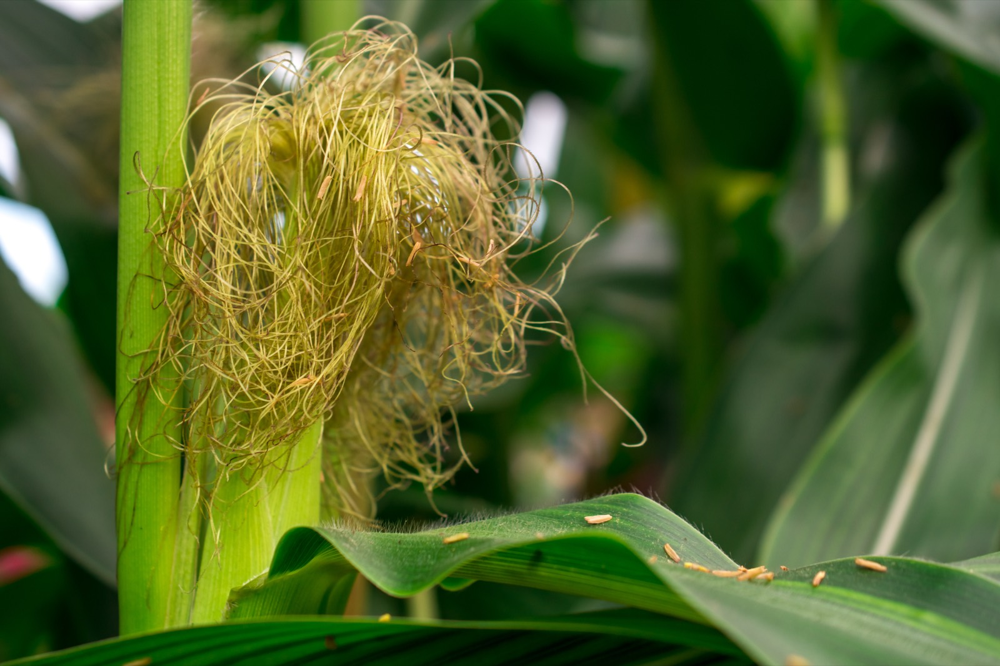

Home / People
02 — Who we areThe group brings together postdocs, graduate students, and professional staff in quantitative genetics, machine learning, and plant biology — based in Ithaca, NY, and working with partners across USDA-ARS, Cornell, the Boyce Thompson Institute, and beyond.

Click anyone to read their full profile. The complete roster and alumni appear on the timeline below.




Around a hundred people have passed through the group. Filter by role; hover a bar to see where alumni are now.
Timeline shown with a representative sample; the full roster with exact years is being added.
Around a hundred postdocs, graduate students, and visiting scientists have trained in the group and gone on to lead labs and teams across academia, industry, NGOs, and government worldwide. Mentoring the next generation of quantitative and computational plant scientists is central to what we do.